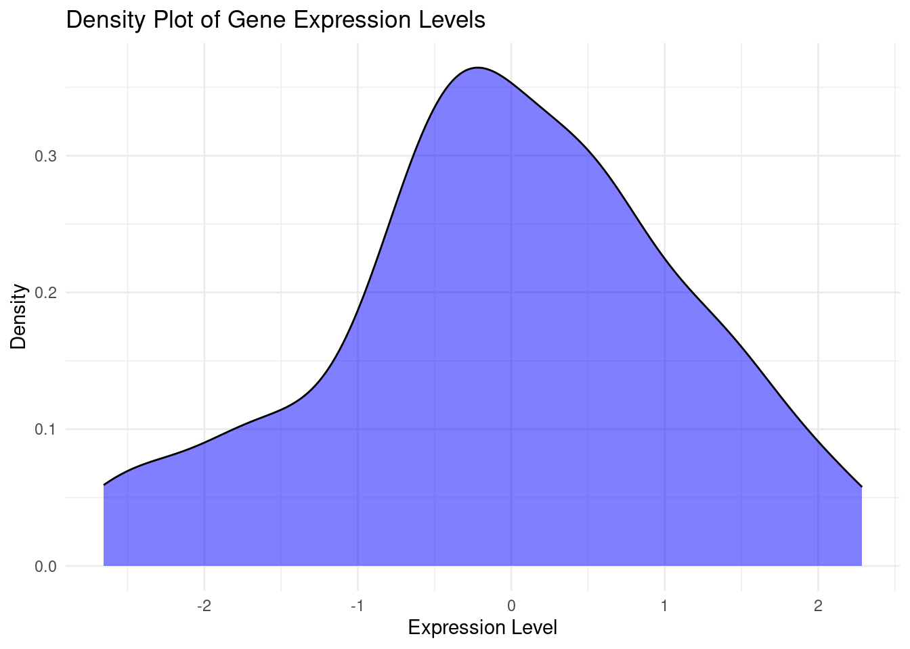
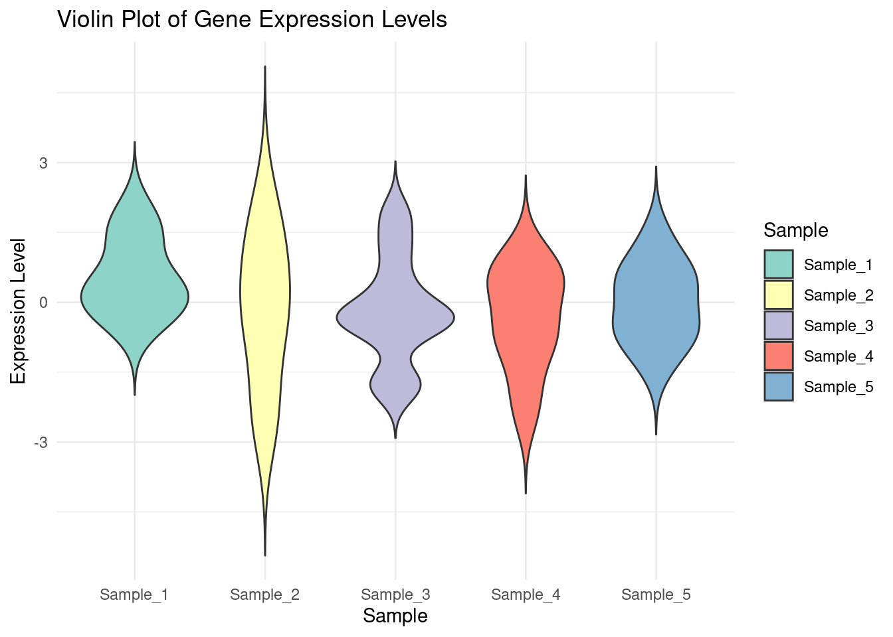
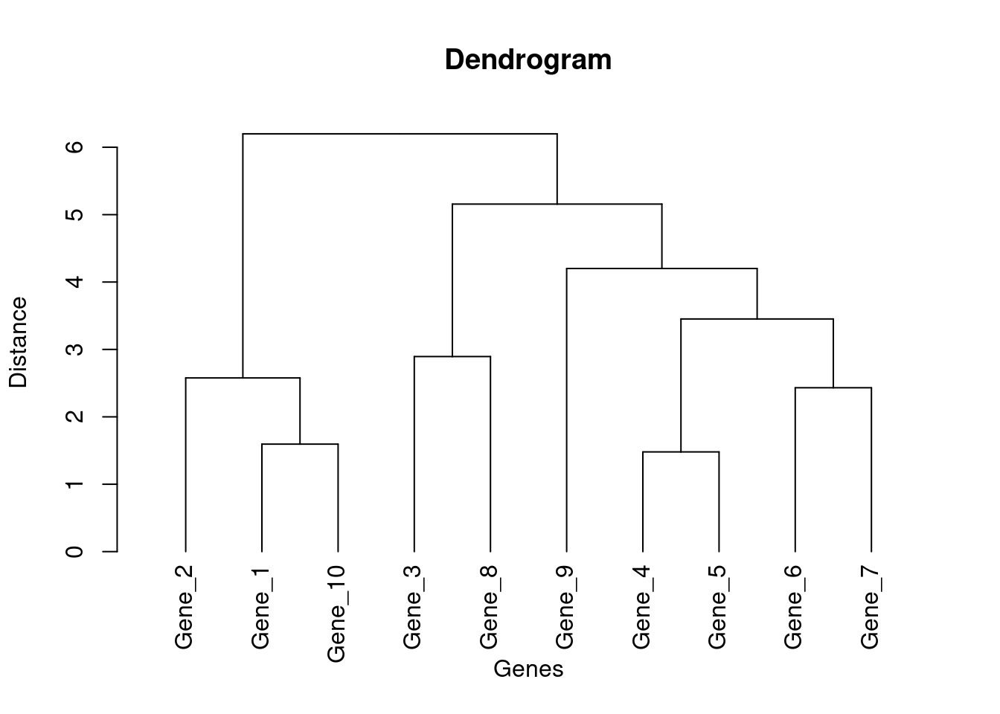
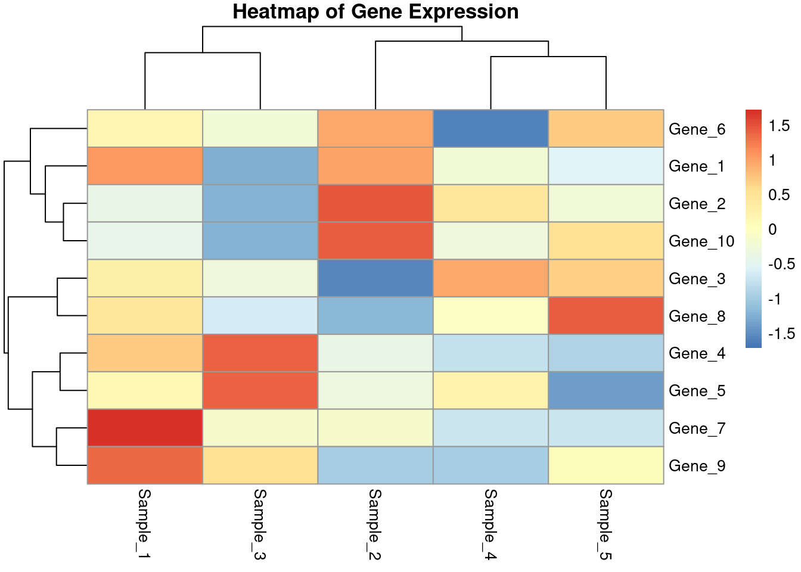
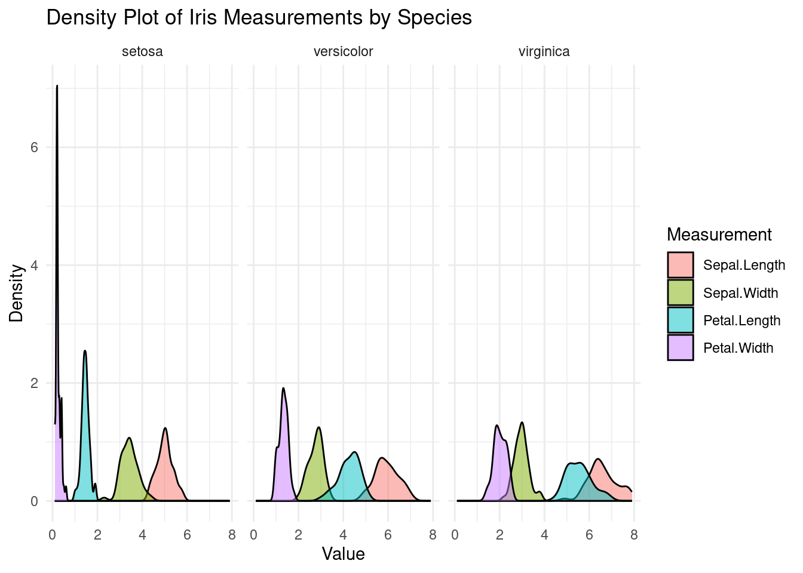
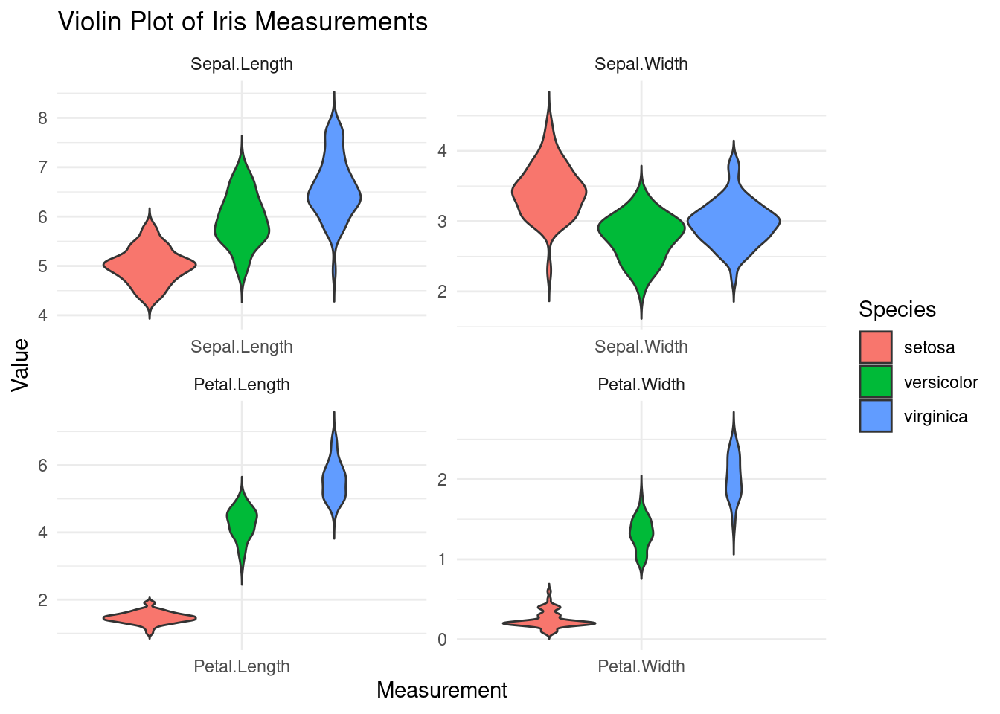
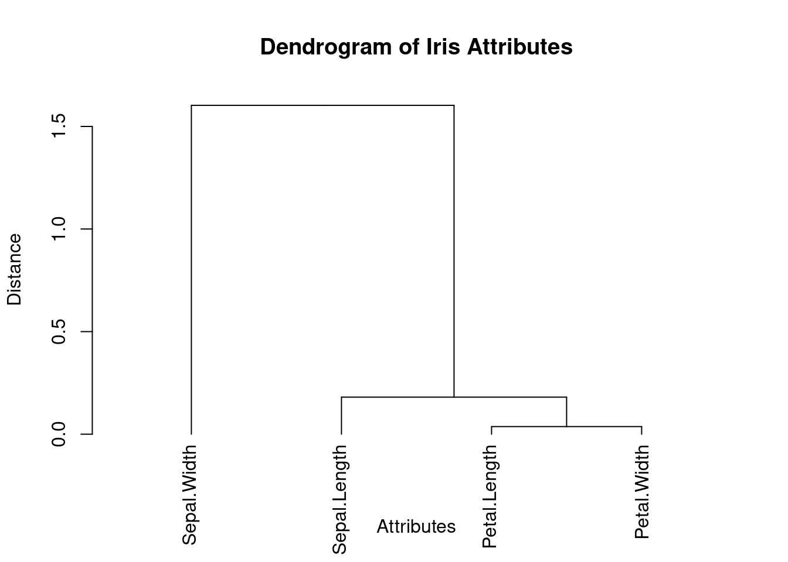
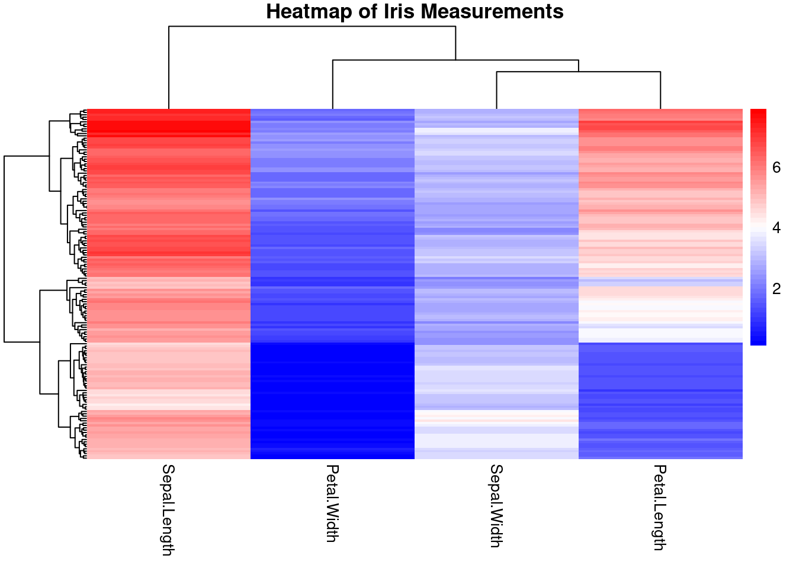

Objective: - Explore advanced visualization techniques and create more complex bioinformatics plots using biological data. Density Plot, Violin Plot, Dendogram, Heatmap - Overview of syntax with simulated data - Explore plots using iris dataset. - Exercise 2
Load necessary libraries
if (!require("ggplot2")) install.packages("ggplot2")
Loading required package: ggplot2
if (!require("GGally")) install.packages("GGally")
Loading required package: GGally
Registered S3 method overwritten by 'GGally':
method from
+.gg ggplot2
if (!require("pheatmap")) install.packages("pheatmap")
Loading required package: pheatmap
if (!require("dendextend")) install.packages("dendextend")
Loading required package: dendextend
---------------------
Welcome to dendextend version 1.17.1
Type citation('dendextend') for how to cite the package.
Type browseVignettes(package = 'dendextend') for the package vignette.
The github page is: https://github.com/talgalili/dendextend/
Suggestions and bug-reports can be submitted at: https://github.com/talgalili/dendextend/issues
You may ask questions at stackoverflow, use the r and dendextend tags:
https://stackoverflow.com/questions/tagged/dendextend
To suppress this message use: suppressPackageStartupMessages(library(dendextend))
---------------------
Attaching package: 'dendextend'
The following object is masked from 'package:stats':
cutree
if (!require("ggridges")) install.packages("ggridges")
Warning: package 'dplyr' was built under R version 4.3.2
Attaching package: 'dplyr'
The following objects are masked from 'package:stats':
filter, lag
The following objects are masked from 'package:base':
intersect, setdiff, setequal, union
Generate the Mock Gene Expression Dataset
# Set random seed for reproducibilityset.seed(42)# Number of genes and samplesnum_genes <-10num_samples <-5# Generate gene names and sample namesgenes <-paste0("Gene_", 1:num_genes)samples <-paste0("Sample_", 1:num_samples)# Generate random expression levelsexpression_data <-matrix(rnorm(num_genes * num_samples), nrow = num_genes, ncol = num_samples)colnames(expression_data) <- samplesrownames(expression_data) <- genes# Convert to data framedf_expression <-as.data.frame(expression_data)# Display the first few rows of the datasethead(df_expression)
# Create the density plotggplot(df_melted, aes(x = Expression)) +geom_density(fill ="blue", alpha =0.5) +# transparencylabs(title ="Density Plot of Gene Expression Levels",x ="Expression Level",y ="Density") +theme_minimal()

Violin Plot: A violin plot is a data visualization that combines a box plot and a kernel density plot to show the distribution, probability density, and variability of data across different categories.
# Melt the data frame for ggplot2df_melted <-melt(df_expression, variable.name ="Sample", value.name ="Expression")
No id variables; using all as measure variables
# Create the violin plot with colorsggplot(df_melted, aes(x = Sample, y = Expression, fill = Sample)) +geom_violin(trim =FALSE) +labs(title ="Violin Plot of Gene Expression Levels",x ="Sample",y ="Expression Level") +theme_minimal() +scale_fill_brewer(palette ="Set3")

Dendrogram: A dendrogram is a tree-like diagram that displays the arrangement of clusters formed by hierarchical clustering, showing the relationships and distances between data points.
# Generate the hierarchical clusteringhc <-hclust(dist(df_expression), method ="ward.D2")# Create the dendrogramdend <-as.dendrogram(hc)plot(dend, main ="Dendrogram", xlab ="Genes", ylab ="Distance")

Heatmap + Dendrogram Heatmaps are useful to visualize matrix-like data, such as gene expression data
# Create the heatmappheatmap(df_expression, scale ="row", main ="Heatmap of Gene Expression")

Load the iris dataset and prepare it for visualization:
# Load the iris datasetdata("iris")# Display the first few rows of the datasethead(iris)
Sepal.Length Sepal.Width Petal.Length Petal.Width
Min. :4.300 Min. :2.000 Min. :1.000 Min. :0.100
1st Qu.:5.100 1st Qu.:2.800 1st Qu.:1.600 1st Qu.:0.300
Median :5.800 Median :3.000 Median :4.350 Median :1.300
Mean :5.843 Mean :3.057 Mean :3.758 Mean :1.199
3rd Qu.:6.400 3rd Qu.:3.300 3rd Qu.:5.100 3rd Qu.:1.800
Max. :7.900 Max. :4.400 Max. :6.900 Max. :2.500
Species
setosa :50
versicolor:50
virginica :50
Density Plot
# Melt the data frame for ggplot2df_melted <-melt(iris, id.vars ="Species", variable.name ="Measurement", value.name ="Value")# Create the density plot with facets for each speciesggplot(df_melted, aes(x = Value, fill = Measurement)) +geom_density(alpha =0.5) +# transparencylabs(title ="Density Plot of Iris Measurements by Species",x ="Value",y ="Density") +theme_minimal() +facet_wrap(~ Species)

Density Plot
# Melt the data frame for ggplot2df_melted <-melt(iris, id.vars ="Species", variable.name ="Measurement", value.name ="Value")# Create the violin plot with colorsggplot(df_melted, aes(x = Measurement, y = Value, fill = Species)) +geom_violin(trim =FALSE) +labs(title ="Violin Plot of Iris Measurements",x ="Measurement",y ="Value") +theme_minimal() +facet_wrap(~ Measurement, scales ="free")

Dendogram
# Remove the Species column for clusteringiris_no_species <- iris[, -5]# Compute the correlation matrixcor_matrix <-cor(iris_no_species)cor_matrix
# Perform hierarchical clustering on the correlation matrixhc <-hclust(as.dist(1- cor_matrix), method ="ward.D2")# Create the dendrogramdend <-as.dendrogram(hc)# Plot the dendrogramplot(dend, main ="Dendrogram of Iris Attributes", xlab ="Attributes", ylab ="Distance")

# Remove the Species column for heatmap plottingiris_data <- iris[, -5]# Create the heatmap with a simplified color scalepheatmap(as.matrix(iris_data), main ="Heatmap of Iris Measurements", cluster_rows =TRUE, cluster_cols =TRUE, show_rownames =FALSE,color =colorRampPalette(c("blue", "white", "red"))(50))

—————————————Assignment 2: Part 2——————————————————–
Dr. Smith is studying the famous iris dataset to understand the differences in flower measurements across three species: setosa, versicolor, and virginica. Help Dr. Smith visualize and interpret the data to identify distinguishing features of each species.
Density Plot Analysis: Create a density plot to visualize the distribution of sepal length measurements across the three iris species. Identify which species have similar or distinct sepal length distributions.
# Solution a# Hint: Look for peaks in the density plots to see which species have similar or distinct sepal length distributions.
Violin Plot Analysis: Use a violin plot to compare the distribution and density of petal widths across the three iris species. Highlight which species have the widest and narrowest petals.
# Solution b# Hint: Examine the width and shape of the violins to understand the distribution and density of petal widths across species.\